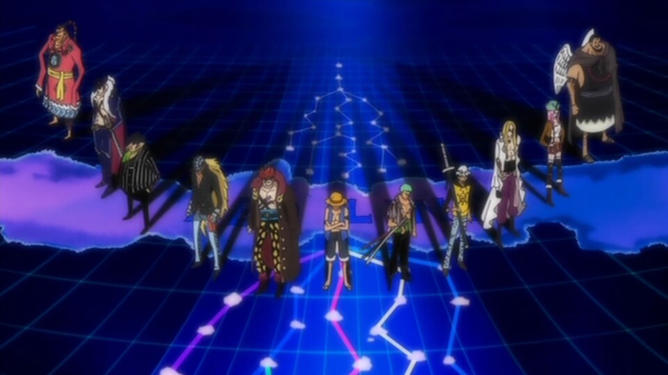
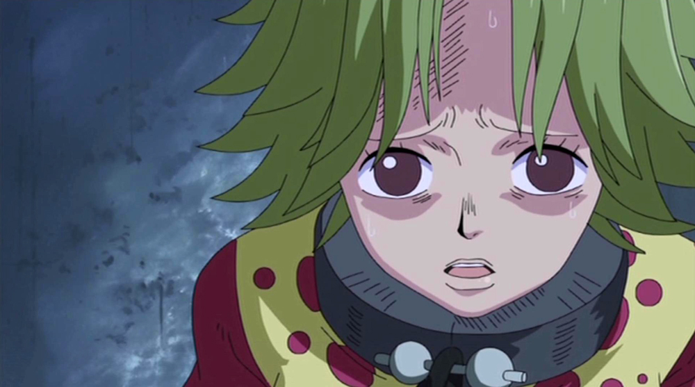
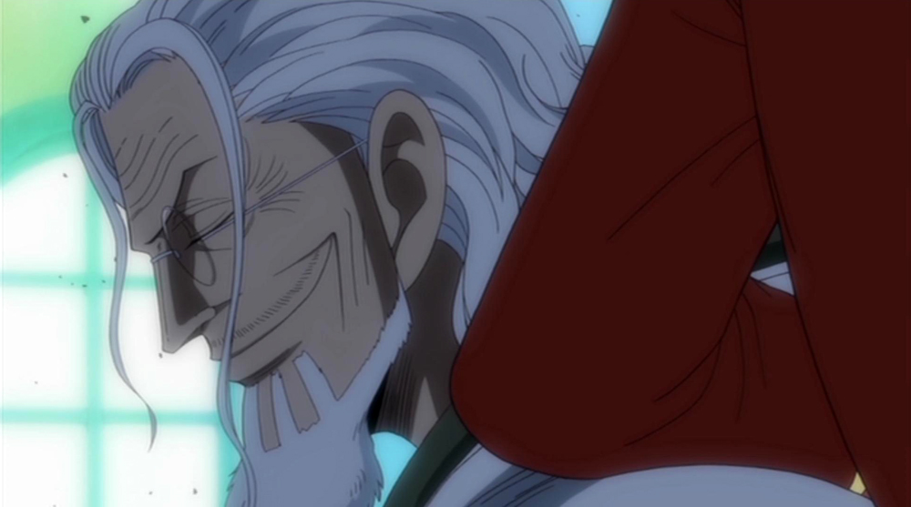
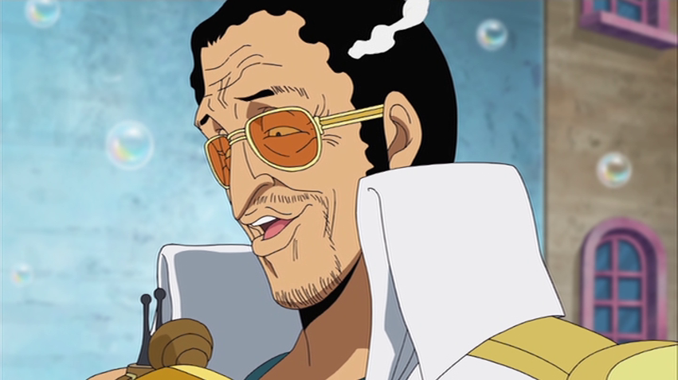
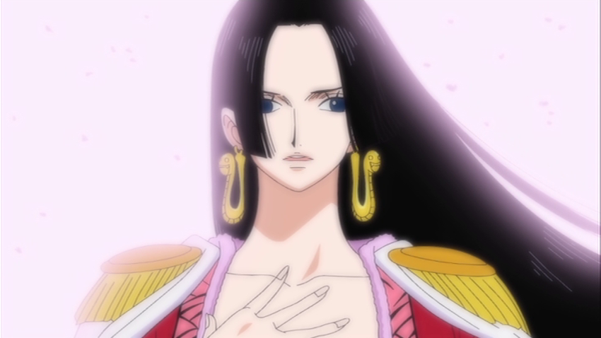
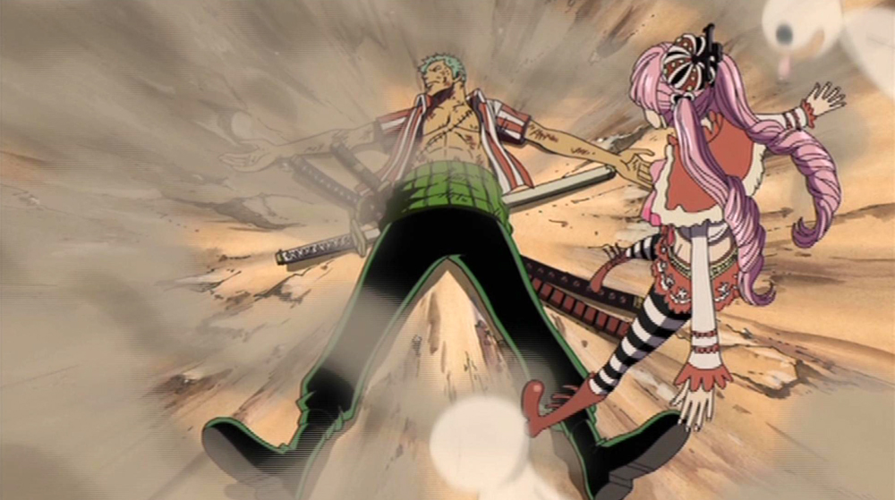

シャボンディ諸島編
11人の超新星
 魚人島を目指す途中、人魚のケイミー、ヒトデのパッパグと出会った麦わらの一味。彼らを狙う人攫い屋〝トビウオライダーズ〟を撃退し、ケイミーの友達で元アーロン一味であるはっちゃんを助け出す。
海賊が〝赤い土の大陸（レッドライン）〟を越えるには、海底にある魚人島を通らなければならず、それには船に特殊なコーティングを施す必要がある。その事を知った一行は、はっちゃんの知り合いのコーティング職人がいるシャボンディ諸島へと向かう。
この諸島では、聖地マリージョアの住人で「世界貴族」とも呼ばれる〝天竜人〟が闊歩しており、彼らによって人間や人魚達の売買も行われていた。
さらに〝新世界〟を目指す海賊達が集結する場所という事もあり、懸賞金が〝億〟を超える海賊ルーキーが、ルフィ、ゾロを含め11人も集っていた。
ケイミーを救え
 ルフィ達はさっそく職人探しに出かけるが、目を離した隙にケイミーが攫われ、人間屋（ヒューマンショップ）で競りに出されてしまう。急ぎ競売会場へと向かったルフィ達だったが、時すでに遅く、ケイミーは天竜人に買われ、さらにルフィを制止しようとしたはっちゃんが撃たれてしまう。
怒りを覚えたルフィは、「天竜人には手を出さない」という不文律を破り、天竜人であるチャルロス聖を殴り飛ばしてしまう。
ロジャーとレイリー
 ルフィが天竜人を殴り飛ばした事がきっかけで、会場に居合わせた億超えのルーキーであるユースタス・キッドやトラファルガー・ローを巻き込んだ海兵達との大バトルが勃発。
そこでルフィ達は、競りに出されていた老人、シルバーズ・レイリーと出会う。実はこのレイリーこそルフィ達が探していたコーティング職人であり、さらに元ロジャー海賊団の副船長にして〝ひとつなぎの大秘宝〟の秘密を知る男でもあった。
彼から海賊王が処刑に至った真相を聞き、驚くルフィ達。だが〝ひとつなぎの大秘宝（ワンピース）〟の正体に関してだけは、ルフィは知る事を頑なに拒む。
完全崩壊
 一方、通報を受けた海軍は、事態を収拾するために海軍大将・黄猿、海軍本部化学部隊隊長の戦桃丸、さらにバーソロミュー・くまそっくりの人間兵器〝パシフィスタ〟をシャボンディ諸島へと派遣。その圧倒的な力で億超えのルーキー達を追い詰める。
島中が大混乱に陥る中、ルフィ達の前に〝本物〟のくまが姿を現す。レイリーが助けに入るも、ルフィ達はくまの能力によって世界各地へ散り散りに飛ばされてしまい、麦わらの一味は完全崩壊を喫する。
海賊女帝ボア・ハンコック
 シャボンディ諸島での戦いにて、バーソロミュー・くまによって世界各地に飛ばされた麦わらの一味。ルフィが飛ばされたのは、女ヶ島アマゾン・リリーだった。
男子禁制のこの国は〝王下七武海〟の一人にして海賊女帝ボア・ハンコックが治めていたが、ルフィはひょんな事からハンコックの秘密＝背中の紋章を見てしまい、処刑される事になってしまう。
処刑の場となった闘技場で、ハンコックの二人の妹・サンダーソニアとマリーゴールドと戦い、見事勝利したルフィ。さらに二人の背中の紋章を人目に晒されないよう庇った事で、処刑を免れる。
ルフィが「天竜人を殴り飛ばす」という大事件を起こした男だと知ったハンコックは、自分がかつて天竜人の奴隷だった事をルフィに打ち明ける。ハンコック達の背中の紋章は、その時に付けられた奴隷の印だった。
誰も逆えないはずの天竜人に、一切の恐れなく挑んだルフィを気に入ったハンコックは、船を貸し出す事を許可する。
だが出航前夜、ルフィは兄エースの公開処刑が間近に迫っている事を知らされる。ルフィは仲間との再会を一旦後回しに、単身エース救出へ向かう事を決意。ルフィに惹かれ、恋に落ちたハンコックの協力を得て、ルフィはエース幽閉の地・大監獄インペルダウンへと向かう。
仲間たちの行方
 ルフィがインペルダウンを目指していた頃、残りの麦わらの一味の面々も、くまに飛ばされた先でそれぞれ悪戦苦闘していた。
ロビンは〝東の海（イーストブルー）〟の労働者の国テキーラウルフで囚われの身に。ナミは小さな空島で天候を科学する国ウェザリアに、チョッパーは〝南の海（サウスブルー）〟の鳥が人を支配する島・トリノ王国にいた。
そしてフランキー、サンジ、ウソップ、ゾロはそれぞれ〝偉大なる航路（グランドライン）〟の各地へと飛ばされていた。フランキーは冬島の「からくり島」と呼ばれる未来国バルジモアへ。サンジはカマバッカ王国でオカマ達に追いかけられ、ウソップはボーイン列島の野生の島でヘラクレスンと名乗る男と出会う。ブルックは貧困の国ハラヘッターニャで悪魔と間違われてしまい、ゾロはクライガナ島・シッケアール王国跡地で、ゲッコー・モリアの部下ペローナの看病を受けていた。